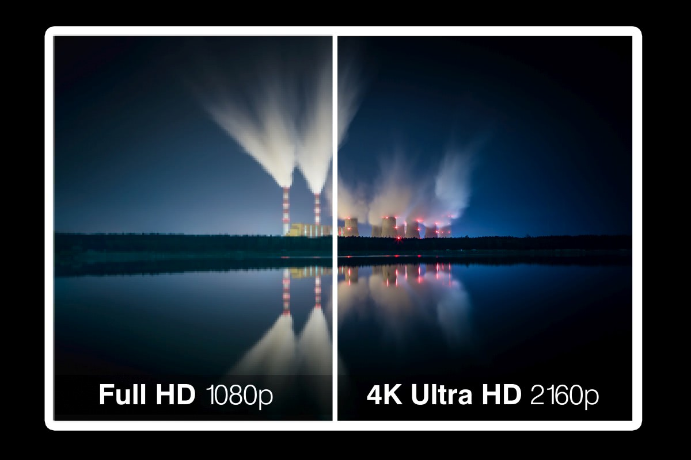
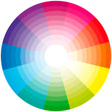
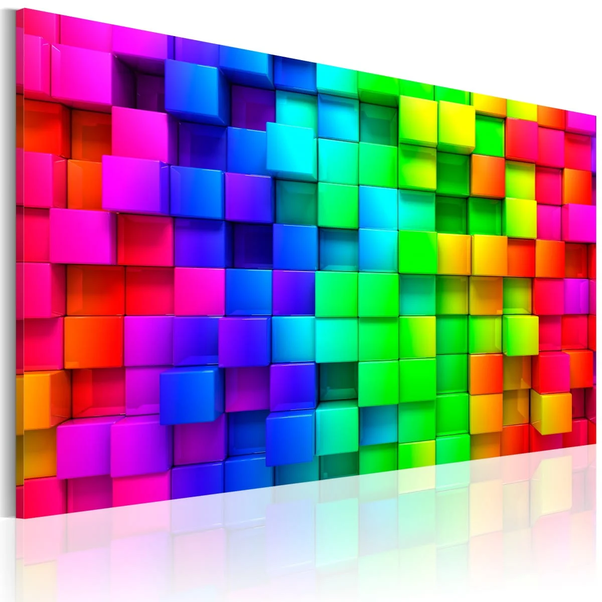
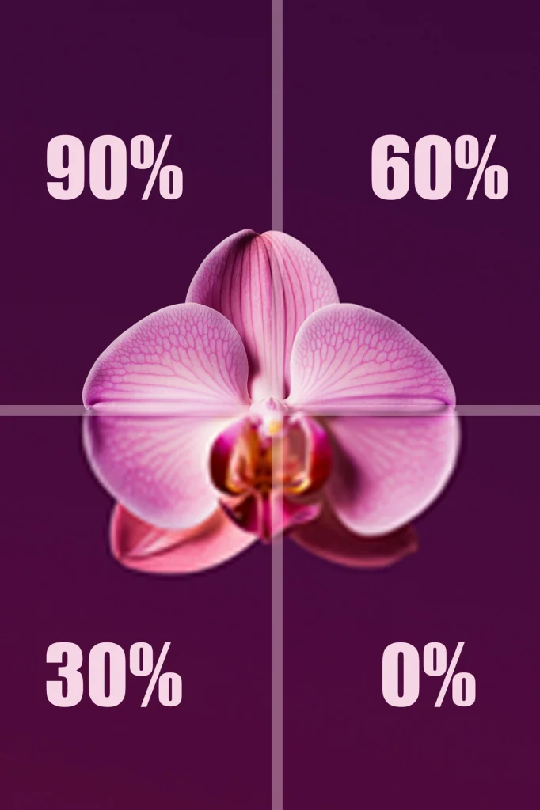

Jakie znaczenie mają podstawowe pojęcia związane z obrazem cyfrowym, takie jak: rozdzielczość, paleta kolorów, głębia kolorów, proporcje ekranu i kompresja obrazu?

📏 Rozdzielczość
1. To liczba pikseli (punktów) tworzących obraz na ekranie lub w pliku graficznym.
2. Im wyższa rozdzielczość, tym więcej szczegółów zawiera obraz.

🎨 Paleta kolorów
1. To zestaw wszystkich kolorów, jakie mogą być użyte w danym obrazie.
2. Pełna paleta RGB – do 16,7 miliona kolorów (8 bitów na każdy kanał: czerwony, zielony, niebieski).

🌈 Głębia kolorów
1. To liczba bitów używana do zapisania koloru jednego piksela.
Im więcej bitów, tym więcej kolorów można zapisać.
📺 Proporcje ekranu:
4:3 – Tradycyjny ekran (stare monitory, TV)
16:9 – Współczesne monitory i telewizory HD
16:10 – Laptopy i komputery biznesowe

📦 Kompresja obrazu
1. To proces zmniejszania rozmiaru pliku graficznego, by zajmował mniej miejsca.
2. Kompresja stratna – usuwa część danych, co może pogorszyć jakość (np. JPG).
3. Kompresja bezstratna – zmniejsza rozmiar bez utraty jakości (np. PNG, GIF).